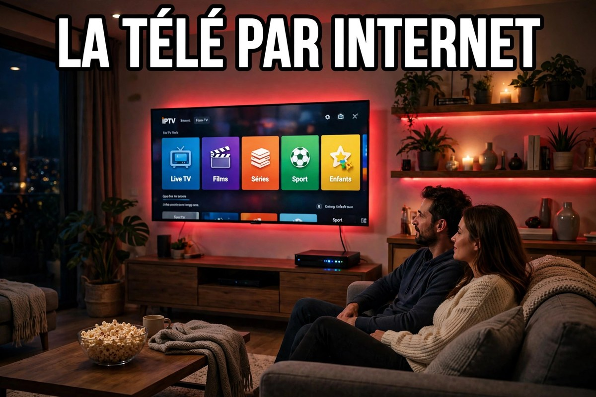
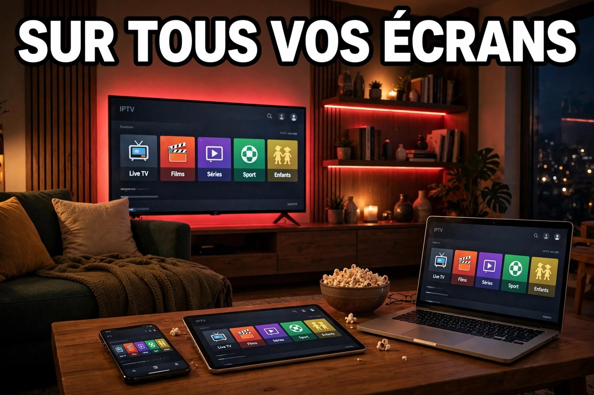
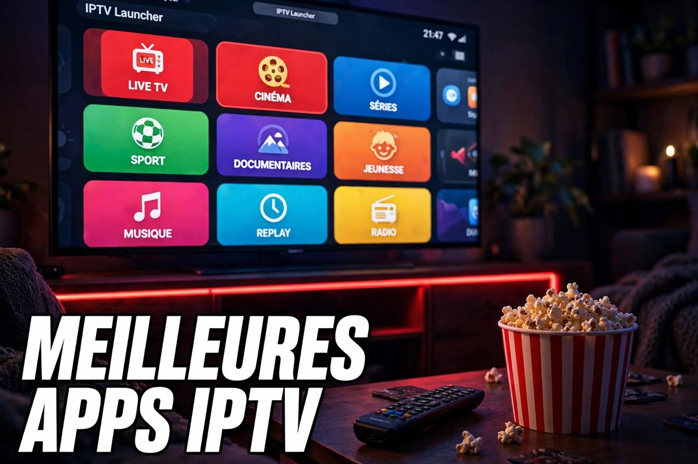

Bases
Qu’est-ce que l’IPTV ? Explication complète
Qu’est-ce que l’IPTV ? Fonctionnement de la télé par internet, matériel nécessaire, Xtream Codes et M3U, appareils compatibles et différences avec le satellite.

Définition de l’IPTV
Dernière vérification : 20 novembre 2026.
IPTV signifie Internet Protocol Television, autrement dit la télévision transmise par internet. Au lieu de recevoir les chaînes par une antenne râteau, une parabole ou le câble, votre appareil reçoit des flux vidéo à travers votre connexion internet, exactement comme lorsque vous regardez une vidéo en ligne.
La différence avec une simple plateforme de streaming, c’est l’organisation : l’IPTV reproduit l’expérience d’une vraie télévision. Vous retrouvez des chaînes en direct classées par numéro et par thème, un guide des programmes qui indique ce qui passe maintenant et plus tard, le replay des émissions déjà diffusées et un catalogue de films et de séries à la demande. Le tout s’affiche dans une application, sur la télé du salon comme sur un téléphone.
En France, le terme désigne aussi bien la télévision des box opérateurs, qui utilise la même technologie, que les services IPTV indépendants comme Sunday IPTV, qui fonctionnent sur n’importe quel appareil connecté, sans box ni engagement.
Envie de tester ? Essai gratuit de 24 h, activation rapide et aide à l’installation sur WhatsApp.
Demander mon essai gratuitComment fonctionne l’IPTV ?

Le principe est simple, même si la technique derrière est sophistiquée :
- Le fournisseur reçoit les chaînes et les encode dans un format adapté à internet, en plusieurs qualités (SD, HD, Full HD, 4K).
- Les flux sont distribués par des serveurs répartis géographiquement, pour rester proches des utilisateurs et absorber les pics d’audience.
- Votre application IPTV se connecte à ces serveurs avec vos identifiants personnels.
- Lorsque vous choisissez une chaîne, l’application reçoit le flux en continu et l’affiche en quelques secondes.
La qualité de ce que vous voyez dépend donc de trois éléments : la qualité des serveurs du fournisseur, votre connexion internet et la puissance de votre appareil. C’est pour cela qu’un même service peut sembler parfait chez un utilisateur et instable chez un autre, et pourquoi il est si utile de tester avant de s’abonner.
Le direct, le replay et la vidéo à la demande
Un abonnement IPTV regroupe en général trois types de contenus. Le direct correspond aux chaînes diffusées en temps réel, sport compris. Le replay (ou catch-up) permet de revenir en arrière dans le guide pour regarder une émission déjà passée. La vidéo à la demande (VOD) propose des films et des séries que vous lancez quand vous voulez, comme sur une plateforme de streaming.
Ce dont vous avez besoin
Pas besoin de matériel spécial ni d’installation par un technicien. Il vous faut :
- une connexion internet : 10 Mb/s pour la HD et 25 Mb/s pour la 4K. La fibre est idéale, mais une bonne ADSL suffit pour la HD ;
- un appareil compatible : Smart TV, Fire TV Stick, box Android, Apple TV, smartphone, tablette, ordinateur ou boîtier MAG ;
- une application IPTV, aussi appelée lecteur, qui affiche les chaînes et le guide ;
- un abonnement IPTV qui fournit les identifiants de connexion.
Si vous hésitez sur l’appareil, notre comparatif quel boîtier IPTV choisir vous aide à trancher, et notre sélection des meilleures applications IPTV vous guide pour le lecteur.
Les deux façons de se connecter : Xtream Codes et M3U
Lorsque vous vous abonnez, vous recevez vos accès sous l’une de ces formes, parfois les deux :
- Xtream Codes : une adresse de serveur, un nom d’utilisateur et un mot de passe. C’est la méthode la plus pratique, car l’application récupère automatiquement les chaînes, les films, les séries et le guide des programmes.
- Lien M3U : une adresse unique qui contient toute la liste. Elle fonctionne avec presque tous les lecteurs, mais elle est longue à taper avec une télécommande.
Les boîtiers MAG utilisent une troisième méthode, l’activation par adresse MAC et URL de portail, détaillée dans notre guide configurer l’IPTV sur un boîtier MAG.
IPTV, satellite ou box opérateur : les différences
| IPTV | Satellite | Box opérateur | |
|---|---|---|---|
| Matériel | Aucun, ou un petit boîtier | Parabole et décodeur | Box et décodeur TV |
| Multi-écrans | Télé, téléphone, tablette | Limité | Limité |
| Engagement | Non | Souvent | Souvent 12 mois |
| Chaînes internationales | Très nombreuses | Selon le bouquet | En option |
| Films et séries | Inclus | En option | En option |
| Fonctionne en voyage | Oui | Non | Rarement |
L’IPTV se distingue surtout par sa souplesse : un seul abonnement, utilisable sur l’écran de votre choix, sans installation ni durée d’engagement. Son point faible est sa dépendance à la connexion internet : si votre réseau est instable, l’image peut couper. Notre guide panne IPTV explique comment éviter et corriger ces coupures.
Envie de tester ? Essai gratuit de 24 h, activation rapide et aide à l’installation sur WhatsApp.
Demander mon essai gratuitSur quels appareils regarder l’IPTV ?

Presque tous les écrans connectés sont compatibles. Voici nos guides d’installation pas à pas pour chacun :
- Smart TV Samsung, LG et Android TV : pas de boîtier, tout se passe dans la boutique d’applications du téléviseur ;
- Amazon Fire TV Stick : le moyen le plus simple et le moins cher de rendre n’importe quelle télé compatible ;
- Android : smartphone, tablette et box : la plateforme la plus souple, avec le plus grand choix d’applications ;
- iPhone, iPad et Apple TV : des applications de l’App Store et la diffusion AirPlay ;
- Boîtier MAG : un décodeur dédié qui démarre directement sur vos chaînes ;
- PC Windows : l’application IPTV Smarters Pro sur votre ordinateur, à relier à la télé en HDMI si besoin.
Les avantages et les limites de l’IPTV
Les avantages
- Un catalogue immense : chaînes françaises et internationales, sport, cinéma, séries, programmes jeunesse.
- Tous les écrans : regardez sur la télé, puis continuez sur votre téléphone.
- Pas d’engagement : vous payez une durée, sans contrat ni frais d’installation.
- Le replay et la VOD intégrés, sans abonnement supplémentaire.
- La mobilité : votre abonnement vous suit en vacances, partout où il y a internet.
Les limites
- La dépendance au réseau : une connexion faible ou un Wi-Fi saturé provoque des coupures.
- La qualité variable d’un fournisseur à l’autre : serveurs, support et stabilité ne se valent pas.
- Une petite phase d’installation : quelques minutes pour installer l’application et saisir les identifiants.
Envie de tester ? Essai gratuit de 24 h, activation rapide et aide à l’installation sur WhatsApp.
Demander mon essai gratuitComment bien choisir son fournisseur IPTV ?
Avant de vous abonner, vérifiez quatre points : la possibilité de tester gratuitement, la stabilité pendant les grands matchs, la réactivité du support et la transparence des prix (pas de frais cachés ni de renouvellement automatique). Méfiez-vous des offres anormalement bon marché qui disparaissent du jour au lendemain. Chez Sunday IPTV, vous pouvez demander un essai de 24 heures, puis choisir parmi nos formules sans engagement.
Questions fréquentes
L’IPTV nécessite-t-elle une box internet particulière ?
Non. N’importe quelle box internet fonctionne, en fibre comme en ADSL. Seul le débit compte : 10 Mb/s pour la HD, 25 Mb/s pour la 4K.
Peut-on regarder l’IPTV sans télévision connectée ?
Oui. Un Fire TV Stick ou une box Android branchée en HDMI rend n’importe quel téléviseur compatible. Vous pouvez aussi regarder sur un téléphone, une tablette ou un ordinateur.
L’IPTV fonctionne-t-elle à l’étranger ?
Oui, partout où vous disposez d’une connexion internet stable. C’est l’un de ses grands avantages par rapport au satellite.
Combien d’écrans peut-on utiliser ?
Un abonnement standard permet une connexion à la fois. Vous pouvez installer l’application sur plusieurs appareils et les utiliser à tour de rôle, ou demander une offre multi-connexions.
Quel débit faut-il pour regarder l’IPTV en 4K ?
Environ 25 Mb/s pour la 4K et 10 Mb/s pour la HD. Branchez si possible votre appareil en Ethernet pour une lecture plus stable.
Testez Sunday IPTV gratuitement
Essai gratuit de 24 heures, activation rapide et support 24/7 sur WhatsApp.
Demander mon essaiÀ lire aussi

Les meilleures applications IPTV en 2026
Les meilleures applications IPTV en 2026 : TiviMate, IPTV Smarters Pro et les lecteurs pour Smart TV et Apple, comparés selon votre appareil et votre usage.

Quel boîtier IPTV choisir en 2026 ?
Quel boîtier IPTV choisir en 2026 ? Fire TV Stick, box Android TV, Apple TV 4K ou boîtier MAG : comparatif, critères qui comptent et erreurs à éviter.

Essai IPTV gratuit sans risque
Essai IPTV gratuit de 24 heures : comment le demander, préparer votre appareil, ce qu’il faut vérifier pendant le test et comment choisir ensuite votre formule.